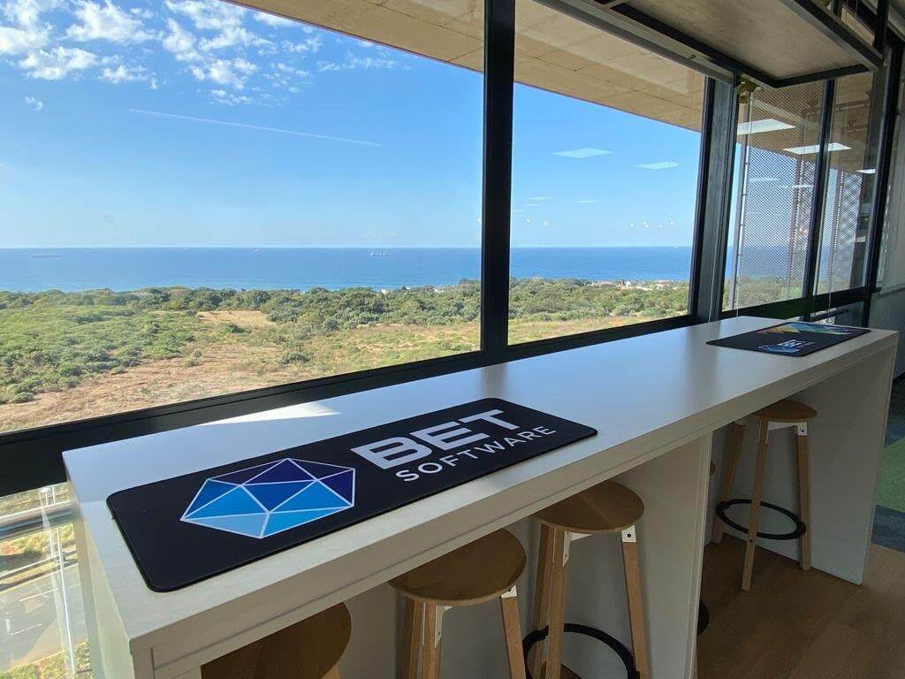

After two very successful community events in 2023 (Data Saturday, and AI/ML & Data Infusion Roadshow), we the Azure, AI/ML & Data Community Durban - are excited to announce the upcoming Data and AI Community Day Durban. If the recent events are anything to go by, then this event promises to be a memorable and impactful experience for our community.
If you’re passionate about all things data, AI/ML, and want to level up your skills, this event is a MUST-ATTEND! 📈🤖
Click on respective link for more information:
Registration
We have a limited set of seats available, so please register early to avoid disappointment:
When you have registered, please share the event with your friends and colleagues!
Speakers
The call for speakers (CfS) has now closed, and we are happy to announce that we have a stellar line-up of speakers for the event: thought leaders in their respective fields, Microsoft MVPs, Software Architects, etc. The line-up looks like so:
Even though the CfS has closed, we are still looking for speakers for upcoming events. If you are interested in speaking, please contact us.
Sessions
The awesome speakers you see above will be presenting on the following topics:
As you see, the sessions are a mix of 60 and 20 minutes sessions. We, the organizing committee, are very excited about the topics and speakers, and we hope you are too!
Agenda
We believe we have a solid agends for the event. The agenda looks like so:
When looking at the agenda, please note the following:
- Registration starts at 08:00, and the event starts at 08:30 sharp.
- The event ends at 18:00. Please try to stay for the entire event, as we have some exciting things planned for the end of the event.
- Some sessions are 20 minute sessions and some ar 60 minutes. In the agenda, we have indicated the start time of the session and the length above the session title.
- Thera are 10 minute breaks between sessions, and a 40 minute break for lunch.
- The registration happens in the reception, in the main building.
Just to be clear, the agenda is subject to change. We will update the agenda as and when changes occur. However, we are extremeley excited about the agenda, and we hope you are too!
Venue
We are hosted by BETSoftware at their stunning offices in Umhlanga:

Figure 1: BETSoftware Offices
The address is: BETSoftware, 65 Richefond Circle, Umhlanga 4319.
See you there on the 27th of April 2024!
Sponsors
We are looking for sponsors to help us make this event a success. If you are interested in sponsoring, please contact us.
We are excited to announce the upcoming Data and AI Community Day Durban. If the recent events are anything to go by, then this event promises to be a memorable and impactful experience for our community.

Figure 2: Data Saturday Durban
As organizers, we are actively seeking sponsors who share our commitment to supporting our community and would like to be a part of this exciting event.
Your sponsorship would not only help us make this event a reality but also showcase your company’s dedication to our community. We have various sponsorship packages available to suit different budgets and marketing goals.
By partnering with us, you’ll have the opportunity to promote your brand to a diverse audience, gain exposure through our marketing efforts, and align your company with a positive community initiative.
If you are interested in learning more about our event and the sponsorship opportunities available, please don’t hesitate to reach out to us. We would be happy to provide you with a detailed sponsorship proposal and discuss how your support can make a meaningful impact.